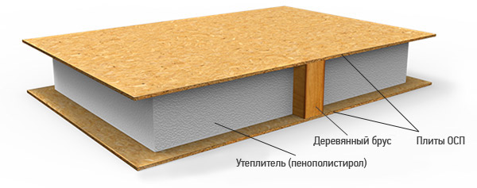
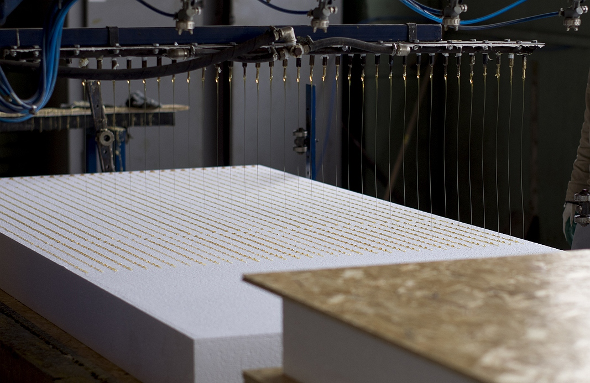
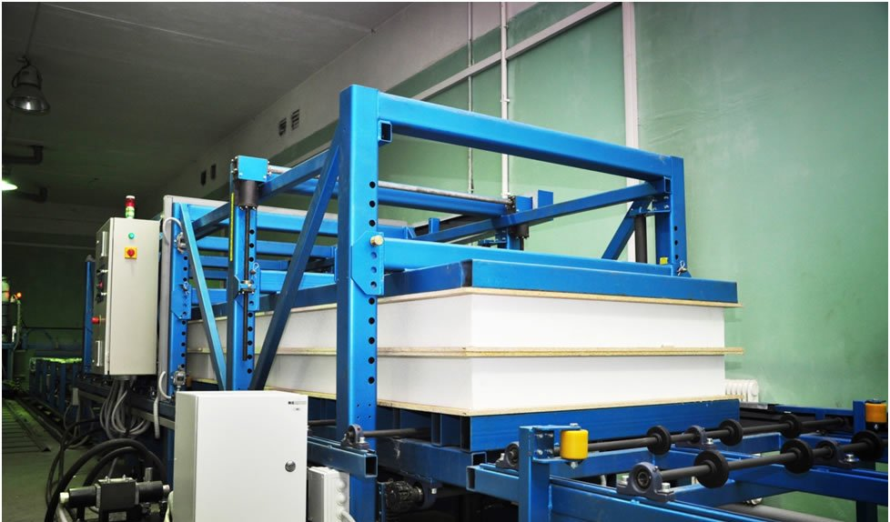

Давайте разбиремся вместе. SIP-Structural Insulated Panel. Структурно-изоляционной панелью называют конструкцию, в которой слой вспененного полистирола заключён между двумя ориентированно-стружечными плитами (OSB-3). Деревянный брус служит соединительным элементом между двумя SIP панелями и выполняет роль каркаса в доме.
В основном производители используют OSB плиты марок Калевала, Egger, Glunz. Это обусловленно качеством используемого материала при производстве конструктивных панелей. При возведении домов наших клиентов мы используем СИП панели с OSB Российского производителя Калевала и Немецкого Egger.
Процесс соединения трёх слоёв воедино происходит после нанесения нейтрального клеевого состава на поверхность утеплителя(пенополистирол Knauf).
В дальнейшем происходит процесс прессования. Только таким образом достигается идеальное склеивание утеплителя и плит OSB.
В итоге мы получаем готовый конструктивный элемент правильной геометрии. Основной размер готовой SIP панели составлятт 174мм*1250мм*2500. Панели такого размера мы чаще используем для возведения стен. В качестве перекрытий используем SIP панели с толщиной утеплителя 200мм. и OSB плит 12мм. Мы не используем SIP панели с толщиной OSB менее 12мм. По желанию заказчика теплый контур дома может быть выполнен из SIP панелей 224мм*1250*2500мм. Могу сказать, что для Северо-Западного региона вполне достаточно использовать для возведения стен дома панели с толщиной утеплителя 150мм. В результате получается очень теплый, прочный дом с ровными поверхностями, готовыми к финишной отделке без дополнительной подготовки. Компания SIP Великие Луки использует только заводские панели. В разделе "НАШИ РАБОТЫ" Вы можете ознакомиться с этапами работ и вариантами наружной и внутренней отделки домов из SIP панелей.Почему наши заказчики вибирают СИП технологию?
В России каркасный дом часто называют канадским. Скорее всего, из-за того, что российский свод правил СП 31-105-2002 "Проектирование и строительство энергоэффективных одноквартирных жилых домов с деревянным каркасом" разработан на основе Национальных норм по жилищному строительству Канады. Хотя такие дома в России строили задолго до принятия этого Свода Правил и называли их чаще финскими. Раньше каркасная технология применялась из соображения экономии материалов. Времена изменились и мы стали чаще задумываться об энергосбережении. На сегодняшний момент каркасная технология строительства благодаря удачному сочетанию в конструкции современных эффективных утеплителей и каркаса обладает прекрасным потенциалом в области энергосбережения. Энергоэффективность СИП панелей не единственный показатель, определяющий выбор наших заказчиков. Скорее всего это совокупность свойств СИП и связующего материала каркаса-древесины. Давайте перечислим основные, которые повлияли на выбор наших заказчиков: